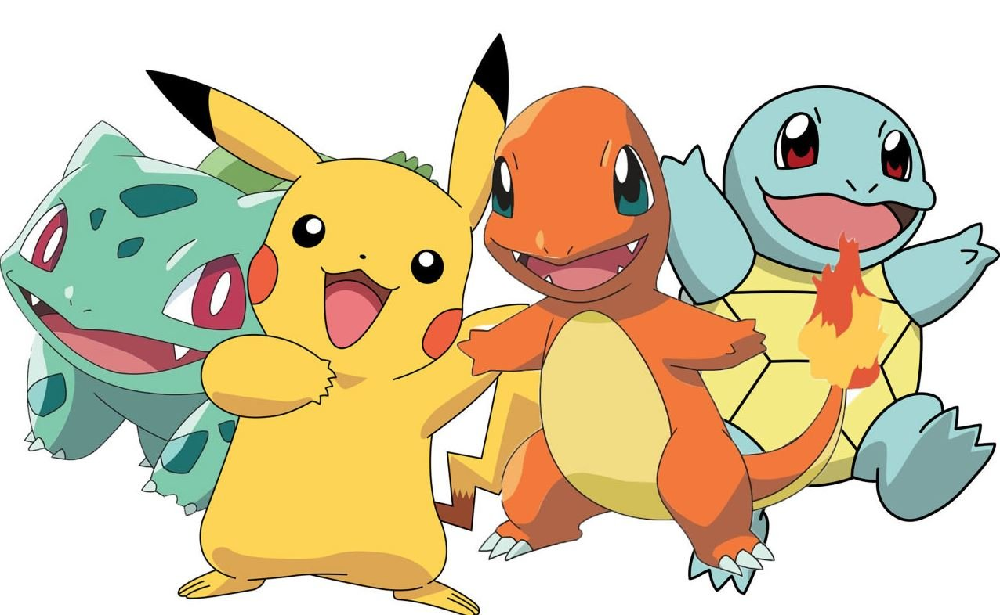

About Charmander
Charmander is a cute dragon Pokemon! He is a starter Pokemon who Ash meets in the first season of Pokemon
The original starter Pokemon
Charmander's Characteristics
- He is a fire type
- He like berries
- He is very cute
Charmander's Friends
Charmander has three main friends but he can be friends with anyone. Clink on the links below to read more them about them